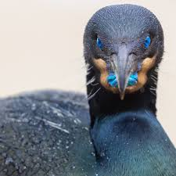
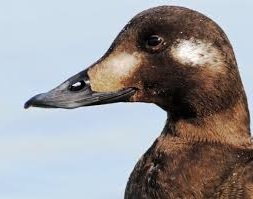

|  | VS |  |
|---|---|---|
| Cormorant | Beats | Scoter |
The Alaskan, or the one known as the Scoter loves the North water. They also like to
play in the surf of California, New England and every other seaboard of the
States, including Canada's. They play in it, compared to the
even more water adept creatur which darts threw it. The submarine, the Cormorant.
Better swimmer than our bay hero the Scoter who tries to fly through
the water, proud as that makes us, the Cormorant means business under water
using large webbed feet as submarine rudders. Not that
the brave Scoter can't, its just the Cormorant revels in doing it different
than a Duck.
Look at him. We are lucky to have a champion with old world ties. Her feathers
at glance and longer seem very scale like. So,..very old world ties.
Her unapolagetic habits as people and other creatures see it, are simply
the only way to grunt through the day to her. Shoulder to shoulder sometimes with more dinnertable
worthly birds like Geese and Ducks.
She's simply more complex in her effeciant silence. And approipretly,
our regal champion knows how to pose like one!